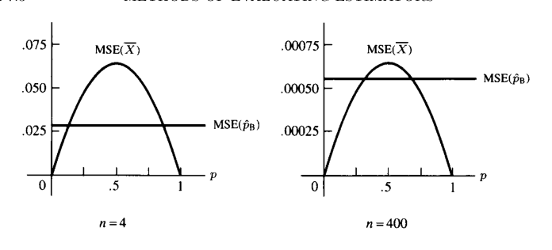
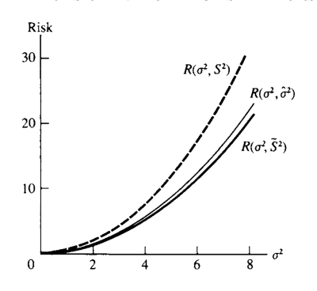

7 점추정
“What! you have solved it already?”
“Well, that would be too much to say. I have discovered a suggestive fact, that is all.”
— Dr. Watson and Sherlock Holmes, The Sign of Four
- 이 장의 주제는 점추정(point estimation)이다.
- 모집단이 pdf 또는 pmf \(f(x\mid\theta)\)로 주어질 때, 모수 \(\theta\)를 알면 모집단 전체의 확률구조를 알 수 있다.
- 실제로는 \(\theta\)를 모르므로, 표본 \(X_1,\ldots,X_n\)을 이용하여 \(\theta\) 또는 \(\tau(\theta)\)를 하나의 값으로 추정한다.
- 이 장은 크게 두 부분으로 나뉜다.
- 추정량을 찾는 방법: 적률법, 최대가능도법, 베이즈 추정량, EM 알고리즘
- 추정량을 평가하는 방법: 평균제곱오차, 최량불편추정량, Rao–Blackwell, 완비충분통계량, 손실함수와 위험함수
- 여기서 중요한 관점은 다음이다.
- 추정량을 만드는 방법은 후보를 제공할 뿐이다.
- 좋은 추정량인지 여부는 별도의 평가 기준으로 판단해야 한다.
7.1 도입
7.1.1 점추정의 목적
- 표본이 모집단 \(f(x\mid\theta)\)에서 나왔다고 하자.
- \(\theta\)가 알려지면 모집단의 분포가 완전히 결정되는 경우가 많다.
- 그러므로 표본으로부터 \(\theta\)를 잘 추정하는 것은 통계추론의 핵심이다.
- 어떤 경우에는 \(\theta\) 자체보다 함수
\[ \tau(\theta) \]
에 관심이 있을 수도 있다. - 예: - 정규분포에서 평균 \(\mu\) - 베르누이분포에서 성공확률 \(p\) - 분산 \(\sigma^2\) - 오즈 \(p/(1-p)\) - 성공확률의 함수 \(p(1-p)\)
7.1.2 정의: 점추정량
- 표본 \(X_1,\ldots,X_n\)의 임의의 함수
\[ W(X_1,\ldots,X_n) \]
를 점추정량(point estimator)이라고 한다. - 즉, 모든 통계량은 점추정량의 후보가 될 수 있다. - 이 정의에는 두 가지 의도적인 느슨함이 있다. - \(W\)가 어떤 모수를 추정하는지 명시하지 않는다. - \(W\)의 값의 범위가 모수공간과 반드시 같아야 한다고 요구하지 않는다.
7.1.3 추정량과 추정값
- 추정량(estimator)은 표본 확률변수의 함수이다.
\[ W(X_1,\ldots,X_n) \]
- 추정값(estimate)은 실제 관측값 \(x_1,\ldots,x_n\)을 대입한 숫자이다.
\[ W(x_1,\ldots,x_n) \]
- 예를 들어 표본평균 \(\bar X\)는 추정량이고, 실제 자료에서 계산된 \(\bar x\)는 추정값이다.
7.2 추정량을 찾는 방법
- 단순한 경우에는 직관만으로도 좋은 추정량을 찾을 수 있다.
- 예를 들어 모집단 평균을 추정할 때 표본평균 \(\bar X\)는 자연스러운 후보이다.
- 그러나 복잡한 모형에서는 직관이 불충분하거나 잘못된 방향으로 이끌 수 있다.
- 이 절에서는 네 가지 추정량 구성 방법을 다룬다.
- 적률법
- 최대가능도법
- 베이즈 추정량
- EM 알고리즘
7.2.1 적률법
- 적률법(method of moments)은 가장 오래된 점추정법 중 하나이다.
- 기본 아이디어는 단순하다.
- 표본적률을 모집단 적률과 같다고 놓는다.
- 그 방정식을 풀어 모수의 추정량을 얻는다.
- 장점:
- 계산이 비교적 쉽다.
- 거의 항상 어떤 형태의 추정량을 제공한다.
- 단점:
- 항상 좋은 추정량을 주는 것은 아니다.
- 추정량의 범위가 모수공간과 맞지 않을 수 있다.
7.2.1.1 적률법의 일반형
- \(X_1,\ldots,X_n\)이 \(f(x\mid\theta_1,\ldots,\theta_k)\)에서 나온 표본이라고 하자.
- 첫 \(k\)개의 표본적률을 다음과 같이 정의한다.
\[ m_1=\frac1n\sum_{i=1}^{n}X_i, \qquad \mu'_1=EX, \]
\[ m_2=\frac1n\sum_{i=1}^{n}X_i^2, \qquad \mu'_2=EX^2, \]
\[ \vdots \]
\[ m_k=\frac1n\sum_{i=1}^{n}X_i^k, \qquad \mu'_k=EX^k. \tag{7.2.1} \]
- 모집단 적률은 보통 모수의 함수이다.
\[ \mu'_j=\mu'_j(\theta_1,\ldots,\theta_k). \]
- 적률법 추정량 \((\tilde\theta_1,\ldots,\tilde\theta_k)\)는 다음 연립방정식을 풀어 얻는다.
\[ m_1=\mu'_1(\theta_1,\ldots,\theta_k), \]
\[ m_2=\mu'_2(\theta_1,\ldots,\theta_k), \]
\[ \vdots \]
\[ m_k=\mu'_k(\theta_1,\ldots,\theta_k). \tag{7.2.2} \]
7.2.2 예제: 정규분포의 적률법
- \(X_1,\ldots,X_n\)이 iid \(N(\theta,\sigma^2)\)라고 하자.
- 모수는
\[ \theta_1=\theta, \qquad \theta_2=\sigma^2 \]
이다. - 첫 두 모집단 적률은
\[ \mu'_1=EX=\theta, \]
\[ \mu'_2=EX^2=\theta^2+\sigma^2. \]
- 표본적률은
\[ m_1=\bar X, \qquad m_2=\frac1n\sum_{i=1}^{n}X_i^2. \]
- 적률방정식은
\[ \bar X=\theta, \]
\[ \frac1n\sum_{i=1}^{n}X_i^2=\theta^2+\sigma^2. \]
- 따라서 적률법 추정량은
\[ \tilde\theta=\bar X, \]
\[ \tilde\sigma^2 = \frac1n\sum_{i=1}^{n}X_i^2-\bar X^2 = \frac1n\sum_{i=1}^{n}(X_i-\bar X)^2. \]
- 이 예제에서는 적률법이 직관과 잘 맞는다.
- 단, 분산 추정량의 분모가 \(n-1\)이 아니라 \(n\)이라는 점에 유의한다.
7.2.3 예제: 이항분포에서 시행 횟수와 성공확률 추정
- \(X_1,\ldots,X_n\)이 iid \(Binomial(k,p)\)라고 하자.
- 여기서는 \(k\)와 \(p\)가 모두 미지라고 가정한다.
- pmf는
\[ P(X_i=x\mid k,p) = \binom{k}{x}p^x(1-p)^{k-x}, \qquad x=0,1,\ldots,k. \]
- 이 문제는 범죄 발생건수처럼 실제 발생 횟수 \(k\)와 보고확률 \(p\)가 모두 불확실한 상황에서 나타날 수 있다.
- 모집단 평균과 분산은
\[ EX=kp, \qquad Var(X)=kp(1-p). \]
- 두 번째 모멘트는
\[ EX^2=Var(X)+(EX)^2=kp(1-p)+k^2p^2. \]
- 적률방정식은
\[ \bar X=kp, \]
\[ \frac1n\sum_{i=1}^{n}X_i^2=kp(1-p)+k^2p^2. \]
- 정리하면
\[ \tilde k = \frac{\bar X^2}{\bar X-\frac1n\sum_{i=1}^{n}(X_i-\bar X)^2}, \]
\[ \tilde p = \frac{\bar X}{\tilde k}. \]
- 이 추정량은 항상 합리적인 값을 주지는 않는다.
- 예를 들어 표본분산이 표본평균보다 크면 \(\tilde k\)가 음수가 될 수 있다.
- 이 점은 적률법의 한계를 보여준다.
7.2.4 예제: Satterthwaite 근사
- 적률법은 추정량 자체뿐 아니라 분포근사에도 사용된다.
- \(Y_i\sim\chi^2_{r_i}\)가 서로 독립이라고 하자.
- 관심은 다음 형태의 합이다.
\[ \sum_{i=1}^{k}a_iY_i. \]
- 일반적으로 이 합의 정확한 분포는 다루기 어렵다.
- Satterthwaite 근사는 이를 적절한 자유도 \(\nu\)를 가진 카이제곱형 분포로 맞춘다.
- 단순한 적률맞춤은 음의 자유도 추정량을 만들 수 있으므로, Satterthwaite는 더 안정적인 형태를 사용하였다.
- 그 결과 자유도 추정량은
\[ \hat\nu = \frac{\left(\sum_i a_iY_i\right)^2} {\sum_i \frac{a_i^2}{r_i}Y_i^2}. \]
- 이 근사는 실제 응용에서 여전히 널리 쓰인다.
- 중요한 교훈은 다음이다.
- 단순 적률법은 출발점이다.
- 문제 구조에 맞추어 적률법을 조정하면 훨씬 좋은 근사를 얻을 수 있다.
7.3 최대가능도추정량
- 최대가능도법(maximum likelihood)은 추정량을 찾는 가장 널리 쓰이는 방법이다.
- 표본이 \(f(x\mid\theta_1,\ldots,\theta_k)\)에서 iid로 나왔다면 가능도함수는
\[ L(\theta\mid x) = L(\theta_1,\ldots,\theta_k\mid x_1,\ldots,x_n) = \prod_{i=1}^{n}f(x_i\mid\theta_1,\ldots,\theta_k). \tag{7.2.3} \]
7.3.1 정의: MLE
- 각 표본점 \(x\)에 대해 \(L(\theta\mid x)\)를 \(\theta\)의 함수로 보고 최대화하는 값 \(\hat\theta(x)\)를 찾는다.
- 이때 \(\hat\theta(X)\)를 \(\theta\)의 최대가능도추정량(MLE)이라고 한다.
- 직관적으로 MLE는 “관측된 표본이 가장 그럴듯해지는 모수값”이다.
7.3.2 MLE를 찾을 때의 기본 절차
- 가능도함수가 미분가능하면 내부 극값 후보는 다음 방정식을 만족한다.
\[ \frac{\partial}{\partial\theta_i}L(\theta\mid x)=0, \qquad i=1,\ldots,k. \tag{7.2.4} \]
- 실제 계산에서는 보통 로그가능도
\[ \ell(\theta\mid x)=\log L(\theta\mid x) \]
를 사용한다. - 로그함수는 증가함수이므로 \(L\)과 \(\log L\)의 최대점은 같다. - 그러나 1차 미분이 0이라는 조건은 필요조건일 뿐이다. - 다음을 별도로 확인해야 한다. - 그 점이 최대인지 최소인지 - 지역최대인지 전역최대인지 - 경계점에서 더 큰 값이 나오는지 - 수치적으로 안정적인지
7.3.3 예제: 정규 평균의 MLE
- \(X_1,\ldots,X_n\)이 iid \(N(\theta,1)\)이라고 하자.
- 가능도함수는
\[ L(\theta\mid x) = \prod_{i=1}^{n}\frac{1}{\sqrt{2\pi}}e^{-(x_i-\theta)^2/2} = \frac{1}{(2\pi)^{n/2}} \exp\left[-\frac12\sum_{i=1}^{n}(x_i-\theta)^2\right]. \]
- 미분방정식은
\[ \sum_{i=1}^{n}(x_i-\theta)=0 \]
이며 해는
\[ \hat\theta=\bar x. \]
- 따라서
\[ \hat\theta=\bar X \]
가 MLE이다.
7.3.4 예제: 직접 최대화
- 정규 평균 예제에서 다음 항등식을 사용할 수 있다.
\[ \sum_{i=1}^{n}(x_i-a)^2 \ge \sum_{i=1}^{n}(x_i-\bar x)^2, \]
- 등호는 \(a=\bar x\)일 때만 성립한다.
- 따라서 지수항
\[ \exp\left[-\frac12\sum_{i=1}^{n}(x_i-\theta)^2\right] \]
은 \(\theta=\bar x\)에서 최대가 된다. - 이 방식은 미분보다 더 간결할 수 있다.
7.3.5 예제: 베르누이 MLE
- \(X_1,\ldots,X_n\)이 iid Bernoulli\((p)\)라고 하자.
- \(y=\sum_i x_i\)라고 하면 가능도는
\[ L(p\mid x)=p^y(1-p)^{n-y}. \]
- 로그가능도는
\[ \ell(p\mid x)=y\log p+(n-y)\log(1-p). \]
- \(0<y<n\)일 때 미분하여 풀면
\[ \hat p=\frac{y}{n}=\bar x. \]
- \(y=0\) 또는 \(y=n\)인 경계 경우에도 같은 형태가 성립한다.
- 따라서
\[ \hat p=\bar X \]
가 MLE이다.
7.3.6 예제: 제한된 모수공간에서의 MLE
- \(X_1,\ldots,X_n\)이 iid \(N(\theta,1)\)이고 \(\theta\ge0\)임을 알고 있다고 하자.
- 제한이 없다면 MLE는 \(\bar X\)이다.
- 그러나 \(\bar X<0\)이면 모수공간 밖에 있다.
- 이 경우 \(\theta\ge0\)에서 가능도는 \(\theta=0\)에서 최대가 된다.
- 따라서 MLE는
\[ \hat\theta= \begin{cases} \bar X, & \bar X\ge0,\\ 0, & \bar X<0. \end{cases} \]
- 일반적으로 MLE는 항상 허용된 모수공간 안에서 최대화해야 한다.
7.3.7 예제: 이항분포에서 시행 횟수 \(k\)의 MLE
- \(X_1,\ldots,X_n\)이 \(Binomial(k,p)\)에서 나온 표본이고 \(p\)는 알려져 있지만 \(k\)는 미지라고 하자.
- 가능도는
\[ L(k\mid x,p) = \prod_{i=1}^{n}\binom{k}{x_i}p^{x_i}(1-p)^{k-x_i}. \]
- 여기서 \(k\)는 정수이며 \(k\ge\max_i x_i\)이어야 한다.
- factorial 때문에 미분으로 직접 풀기 어렵다.
- 따라서 likelihood ratio
\[ \frac{L(k\mid x,p)}{L(k-1\mid x,p)} = \frac{[k(1-p)]^n}{\prod_{i=1}^{n}(k-x_i)} \]
를 이용한다. - 최대점은 다음 부등식을 만족하는 정수 \(k\)이다.
\[ [k(1-p)]^n\ge\prod_{i=1}^{n}(k-x_i), \]
\[ [(k+1)(1-p)]^n<\prod_{i=1}^{n}(k+1-x_i). \]
- 적절한 변환 \(z=1/k\)를 쓰면 하나의 다항방정식으로 환원된다.
- 이 예제는 MLE가 수치해석적으로 민감할 수 있음을 보여주는 중요한 사례이다.
7.3.8 MLE의 불변성
- 관심 모수가 \(\theta\)가 아니라 \(\tau(\theta)\)일 수 있다.
- MLE의 중요한 성질은 다음이다.
- \(\hat\theta\)가 \(\theta\)의 MLE이면
- \(\tau(\hat\theta)\)가 \(\tau(\theta)\)의 MLE이다.
7.3.8.1 유도 가능도의 정의
- \(\tau\)가 일대일이 아니면 \(\tau(\theta)=\eta\)를 만족하는 \(\theta\)가 여러 개 있을 수 있다.
- 이 경우 \(\eta=\tau(\theta)\)의 유도 가능도는
\[ L^*(\eta\mid x) = \sup_{\{\theta:\tau(\theta)=\eta\}}L(\theta\mid x). \tag{7.2.5} \]
7.3.8.2 정리: MLE의 불변성
- \(\hat\theta\)가 \(\theta\)의 MLE이면, 임의의 함수 \(\tau(\theta)\)에 대해 \(\tau(\hat\theta)\)가 \(\tau(\theta)\)의 MLE이다.
- 예:
- 정규 평균 \(\theta\)의 MLE가 \(\bar X\)이면 \(\theta^2\)의 MLE는 \(\bar X^2\)이다.
- 베르누이 \(p\)의 MLE가 \(\hat p\)이면 \(p(1-p)\)의 MLE는 \(\hat p(1-\hat p)\)이다.
7.3.9 예제: 정규분포에서 \(\mu,\sigma^2\) 모두 미지
- \(X_1,\ldots,X_n\)이 iid \(N(\theta,\sigma^2)\)라고 하자.
- 가능도는
\[ L(\theta,\sigma^2\mid x) = \frac{1}{(2\pi\sigma^2)^{n/2}} \exp\left[-\frac{1}{2\sigma^2}\sum_{i=1}^{n}(x_i-\theta)^2\right]. \]
- 로그가능도는
\[ \ell(\theta,\sigma^2\mid x) = -\frac n2\log(2\pi)-\frac n2\log\sigma^2 - \frac{1}{2\sigma^2}\sum_{i=1}^{n}(x_i-\theta)^2. \]
- 미분방정식을 풀면
\[ \hat\theta=\bar x, \]
\[ \hat\sigma^2 = \frac1n\sum_{i=1}^{n}(x_i-\bar x)^2. \]
- 즉, 정규분포에서 분산의 MLE는 불편표본분산 \(S^2\)가 아니라 분모가 \(n\)인 추정량이다.
7.3.10 예제: MLE의 수치적 불안정성
- Olkin, Petkau, Zidek의 예에서 이항분포의 \(k\)를 추정할 때 다음 두 자료를 비교한다.
\[ (16,18,22,25,27) \]
와
\[ (16,18,22,25,28). \]
- 두 번째 자료는 마지막 값이 27에서 28로 1만 증가했을 뿐이다.
- 그러나 \(k\)의 MLE는 크게 변할 수 있다.
- 이 현상은 likelihood가 최대점 근처에서 매우 평평하거나 유한한 최대점이 약할 때 발생한다.
- 수치적으로 MLE를 구할 때는 안정성을 반드시 점검해야 한다.
7.4 베이즈 추정량
- 고전적 접근에서는 \(\theta\)를 미지이지만 고정된 값으로 본다.
- 베이즈 접근에서는 \(\theta\)를 확률분포를 갖는 양으로 본다.
- 이때 자료를 보기 전 \(\theta\)에 대한 믿음을 나타내는 분포를 사전분포(prior distribution)라고 한다.
- 자료를 본 뒤 사전분포를 갱신한 분포를 사후분포(posterior distribution)라고 한다.
7.4.1 사후분포
- 사전분포를 \(\pi(\theta)\), 표본분포를 \(f(x\mid\theta)\)라고 하자.
- 사후분포는 Bayes 규칙으로
\[ \pi(\theta\mid x) = \frac{f(x\mid\theta)\pi(\theta)}{m(x)}, \tag{7.2.7} \]
여기서
\[ m(x)=\int f(x\mid\theta)\pi(\theta)\,d\theta \tag{7.2.8} \]
는 \(X\)의 주변분포이다. - 사후분포는 관측된 표본 \(x\)에 조건을 건 \(\theta\)의 조건부분포이다. - 사후평균 \(E(\theta\mid x)\)는 대표적인 베이즈 점추정량이다.
7.4.2 예제: 이항 베이즈 추정
- \(X_1,\ldots,X_n\)이 iid Bernoulli\((p)\)이고 \(Y=\sum_iX_i\)라 하자.
- 표본분포는
\[ Y\mid p\sim Binomial(n,p). \]
- 사전분포를
\[ p\sim Beta(\alpha,\beta) \]
로 둔다. - 결합밀도 또는 결합질량은
\[ f(y,p) = \binom{n}{y}p^y(1-p)^{n-y} \frac{\Gamma(\alpha+\beta)}{\Gamma(\alpha)\Gamma(\beta)} p^{\alpha-1}(1-p)^{\beta-1}. \]
- \(Y\)의 주변분포는 beta-binomial 형태이다.
\[ f(y) = \binom{n}{y} \frac{\Gamma(\alpha+\beta)}{\Gamma(\alpha)\Gamma(\beta)} \frac{\Gamma(y+\alpha)\Gamma(n-y+\beta)}{\Gamma(n+\alpha+\beta)}. \tag{7.2.9} \]
- 사후분포는
\[ p\mid y\sim Beta(y+\alpha,n-y+\beta). \]
- 사후평균을 베이즈 추정량으로 쓰면
\[ \hat p_B = \frac{y+\alpha}{\alpha+\beta+n}. \]
- 이를 다음과 같이 해석할 수 있다.
\[ \hat p_B = \left(\frac{n}{\alpha+\beta+n}\right)\left(\frac yn\right) + \left(\frac{\alpha+\beta}{\alpha+\beta+n}\right) \left(\frac{\alpha}{\alpha+\beta}\right). \]
- 즉, 베이즈 추정량은 표본비율과 사전평균의 가중평균이다.
- 표본크기 \(n\)이 커질수록 표본정보의 가중치가 커진다.
7.4.3 정의: 켤레사전분포
- 분포족 \(F=\{f(x\mid\theta)\}\)에 대해 사전분포족 \(\Pi\)가 다음 성질을 가지면 켤레사전분포족이라고 한다.
- \(\Pi\)의 사전분포와 \(F\)의 표본분포를 결합했을 때,
- 모든 자료 \(x\)에 대해 사후분포가 다시 \(\Pi\)에 속한다.
- 베타분포족은 이항분포족에 대한 켤레사전분포족이다.
- 켤레성은 계산을 단순하게 해주지만, 실제 사전지식을 잘 반영하는지는 별도의 문제이다.
7.4.4 예제: 정규 베이즈 추정량
- \(X\sim N(\theta,\sigma^2)\)이고 \(\theta\)의 사전분포가
\[ \theta\sim N(\mu,\tau^2) \]
라고 하자. - 여기서 \(\sigma^2,\mu,\tau^2\)는 알려져 있다고 가정한다. - 사후분포도 정규분포이며
\[ E(\theta\mid x) = \frac{\tau^2}{\tau^2+\sigma^2}x + \frac{\sigma^2}{\sigma^2+\tau^2}\mu, \tag{7.2.10} \]
\[ Var(\theta\mid x) = \frac{\sigma^2\tau^2}{\sigma^2+\tau^2}. \]
- 사후평균은 자료 \(x\)와 사전평균 \(\mu\)의 가중평균이다.
- 사전분산 \(\tau^2\)가 매우 크면 사전정보가 흐려지고, 베이즈 추정량은 표본정보 \(x\)에 가까워진다.
- 사전분산이 작으면 사전평균에 더 큰 가중치가 부여된다.
7.5 EM 알고리즘
- EM 알고리즘은 MLE를 찾기 위한 반복 알고리즘이다.
- 특히 결측자료(missing data) 또는 잠재변수(latent variable)가 있는 문제에 적합하다.
- 핵심 아이디어는 다음이다.
- 직접 최대화하기 어려운 불완전자료 가능도 대신,
- 완전자료 로그가능도의 조건부기댓값을 반복적으로 최대화한다.
7.5.1 완전자료와 불완전자료
- 관측된 자료를 \(Y\)라고 하고, 관측되지 않은 보강자료를 \(X\)라고 하자.
- 완전자료는 \((Y,X)\)이다.
- 완전자료 밀도 또는 질량함수를 \(f(y,x\mid\theta)\), 불완전자료 밀도 또는 질량함수를 \(g(y\mid\theta)\)라고 하면
\[ g(y\mid\theta)=\int f(y,x\mid\theta)\,dx. \tag{7.2.14} \]
- 이산형에서는 적분 대신 합을 사용한다.
7.5.2 EM의 기본 항등식
- 완전자료 가능도, 불완전자료 가능도, 결측자료의 조건부분포를 각각
\[ L(\theta\mid y,x)=f(y,x\mid\theta), \]
\[ L(\theta\mid y)=g(y\mid\theta), \]
\[ k(x\mid\theta,y)=\frac{f(y,x\mid\theta)}{g(y\mid\theta)} \tag{7.2.17} \]
로 둔다. - 그러면
\[ \log L(\theta\mid y) = \log L(\theta\mid y,x)-\log k(x\mid\theta,y). \tag{7.2.18} \]
- 관측되지 않은 \(x\)를 현재 모수값 \(\theta'\)에서의 조건부분포로 평균내면
\[ \log L(\theta\mid y) = E[\log L(\theta\mid y,X)\mid\theta',y] - E[\log k(X\mid\theta,y)\mid\theta',y]. \tag{7.2.19} \]
7.5.3 EM 반복식
- 초기값 \(\theta^{(0)}\)에서 시작한다.
- 반복 \(r\)에서 다음 값을 계산한다.
\[ \theta^{(r+1)} = \arg\max_{\theta} E[\log L(\theta\mid y,X)\mid\theta^{(r)},y]. \tag{7.2.20} \]
- E-step:
- 현재 추정값으로 완전자료 로그가능도의 조건부기댓값을 계산한다.
- M-step:
- 그 조건부기댓값을 \(\theta\)에 대해 최대화한다.
7.5.4 예제: 여러 포아송 비율 모형
- 서로 독립인 자료가 다음과 같이 주어진다고 하자.
\[ Y_i\sim Poisson(\beta\tau_i), \qquad X_i\sim Poisson(\tau_i). \]
- \(Y_i\)는 질병 발생 수, \(X_i\)는 노출량 또는 인구밀도에 대한 보조정보로 해석할 수 있다.
- 완전자료 가능도는
\[ f((x_1,y_1),\ldots,(x_n,y_n)\mid\beta,\tau_1,\ldots,\tau_n) = \prod_{i=1}^{n} \frac{e^{-\beta\tau_i}(\beta\tau_i)^{y_i}}{y_i!} \frac{e^{-\tau_i}\tau_i^{x_i}}{x_i!}. \tag{7.2.11} \]
- 완전자료가 모두 관측되면 MLE는
\[ \hat\beta = \frac{\sum_{i=1}^{n}y_i}{\sum_{i=1}^{n}x_i}, \]
\[ \hat\tau_j = \frac{x_j+y_j}{\hat\beta+1}, \qquad j=1,\ldots,n. \tag{7.2.12} \]
- 만약 \(x_1\)이 결측이면, EM에서 \(x_1\)의 조건부 기대값이 현재 \(\hat\tau_1^{(r)}\)로 대체된다.
- 반복식은
\[ \hat\beta^{(r+1)} = \frac{\sum_{i=1}^{n}y_i}{\hat\tau_1^{(r)}+\sum_{i=2}^{n}x_i}, \]
\[ \hat\tau_1^{(r+1)} = \frac{\hat\tau_1^{(r)}+y_1}{\hat\beta^{(r+1)}+1}, \]
\[ \hat\tau_j^{(r+1)} = \frac{x_j+y_j}{\hat\beta^{(r+1)}+1}, \qquad j=2,\ldots,n. \tag{7.2.23} \]
7.5.5 정리: EM 가능도의 단조성
- EM 반복열 \(\{\hat\theta^{(r)}\}\)는 불완전자료 가능도를 감소시키지 않는다.
\[ L(\hat\theta^{(r+1)}\mid y) \ge L(\hat\theta^{(r)}\mid y). \tag{7.2.24} \]
- 이 성질은 EM 알고리즘의 핵심이다.
- 다만 가능도가 증가한다고 해서 항상 전역최대점으로 수렴한다는 뜻은 아니다.
- 초기값, 다봉 가능도, saddle point 가능성 등을 고려해야 한다.
7.6 추정량을 평가하는 방법
- 앞 절의 방법들은 추정량 후보를 만든다.
- 이제 필요한 것은 후보들을 비교하고 평가하는 기준이다.
- 이 절에서는 다음 기준을 다룬다.
- 평균제곱오차
- 최량불편추정량
- 충분성과 불편성
- 손실함수와 위험함수
7.7 평균제곱오차
7.7.1 정의: MSE
- 추정량 \(W\)의 \(\theta\)에 대한 평균제곱오차는
\[ MSE_\theta(W)=E_\theta(W-\theta)^2 \]
이다. - MSE는 추정량이 평균적으로 모수에서 얼마나 멀리 떨어지는지 제곱거리로 측정한다.
7.7.2 정의: 편향
- 추정량 \(W\)의 편향은
\[ Bias_\theta(W)=E_\theta W-\theta \]
이다. - \(Bias_\theta(W)=0\)이 모든 \(\theta\)에서 성립하면 \(W\)는 불편추정량이다.
7.7.3 MSE 분해
- MSE는 분산과 편향의 제곱으로 분해된다.
\[ E_\theta(W-\theta)^2 = Var_\theta(W)+[E_\theta W-\theta]^2 = Var_\theta(W)+[Bias_\theta(W)]^2. \tag{7.3.1} \]
- 해석:
- 분산은 추정량의 정밀도와 관련된다.
- 편향은 추정량의 정확도와 관련된다.
- 좋은 추정량은 두 요소를 함께 작게 만들어야 한다.
7.7.4 예제: 정규분포에서 MSE
- \(X_1,\ldots,X_n\)이 iid \(N(\mu,\sigma^2)\)라고 하자.
- \(\bar X\)와 \(S^2\)는 각각 \(\mu\)와 \(\sigma^2\)의 불편추정량이다.
\[ E\bar X=\mu, \qquad ES^2=\sigma^2. \]
- 따라서 MSE는 각각 분산과 같다.
\[ E(\bar X-\mu)^2=Var(\bar X)=\frac{\sigma^2}{n}. \]
- 정규성 하에서
\[ E(S^2-\sigma^2)^2=Var(S^2)=\frac{2\sigma^4}{n-1}. \]
7.7.5 예제: 분산 MLE와 불편표본분산 비교
- 정규분포에서 \(\sigma^2\)의 MLE는
\[ \hat\sigma^2 = \frac1n\sum_{i=1}^{n}(X_i-\bar X)^2 = \frac{n-1}{n}S^2. \]
- 이 추정량은 편향되어 있다.
\[ E\hat\sigma^2 = \frac{n-1}{n}\sigma^2. \]
- 분산은
\[ Var(\hat\sigma^2) = \left(\frac{n-1}{n}\right)^2Var(S^2) = \frac{2(n-1)\sigma^4}{n^2}. \]
- MSE는
\[ E(\hat\sigma^2-\sigma^2)^2 = \left(\frac{2n-1}{n^2}\right)\sigma^4. \]
- 이는
\[ \left(\frac{2n-1}{n^2}\right)\sigma^4 < \frac{2\sigma^4}{n-1} \]
이므로 \(\hat\sigma^2\)가 \(S^2\)보다 작은 MSE를 갖는다. - 그러나 \(\hat\sigma^2\)는 평균적으로 \(\sigma^2\)를 과소추정한다. - MSE만으로 추정량의 모든 성질을 판단할 수는 없다.
7.7.6 예제: 이항 베이즈 추정량의 MSE
- \(X_1,\ldots,X_n\)이 iid Bernoulli\((p)\)이고 \(Y=\sum_iX_i\)라 하자.
- MLE는
\[ \hat p=\frac Yn. \]
- MSE는
\[ E_p(\hat p-p)^2 = Var_p(\bar X) = \frac{p(1-p)}{n}. \]
- 베이즈 추정량
\[ \hat p_B = \frac{Y+\alpha}{\alpha+\beta+n} \]
의 MSE는
\[ E_p(\hat p_B-p)^2 = \frac{np(1-p)}{(\alpha+\beta+n)^2} + \left(\frac{np+\alpha}{\alpha+\beta+n}-p\right)^2. \]
- 특별히 \(\alpha=\beta=\sqrt n/4\)를 선택하면 MSE를 상수에 가깝게 만들 수 있다.
- 이때
\[ \hat p_B = \frac{Y+\sqrt n/4}{n+\sqrt n}, \]
\[ E(\hat p_B-p)^2 = \frac{n}{4(n+\sqrt n)^2}. \]

- 작은 표본에서는 \(\hat p_B\)가 안정적일 수 있다.
- 큰 표본에서는 \(\hat p\)가 대체로 더 좋은 선택이 된다.
- 이 예제는 MSE가 모수값에 따라 달라지며, 하나의 추정량이 모든 곳에서 항상 최선이 아닐 수 있음을 보여준다.
7.7.7 예제: 등변추정량의 MSE
- 위치모수 모형에서 \(X_i\sim f(x_i-\theta)\)라고 하자.
- 등변추정량은 자료를 모두 \(a\)만큼 이동시키면 추정량도 \(a\)만큼 이동해야 한다.
- 즉,
\[ W(x_1+a,\ldots,x_n+a)=W(x_1,\ldots,x_n)+a. \tag{7.3.2} \]
- 이 성질을 만족하는 경우 MSE가 \(\theta\)에 의존하지 않을 수 있다.
- 따라서 등변추정량의 클래스 안에서는 MSE로 추정량을 비교하기가 쉬워진다.
7.8 최량불편추정량
- 전체 추정량 클래스에서 MSE가 가장 작은 추정량을 찾는 것은 일반적으로 불가능하거나 의미가 약할 수 있다.
- 예를 들어 상수 추정량 \(\hat\theta=17\)은 \(\theta=17\) 근처에서는 매우 좋지만 다른 곳에서는 나쁘다.
- 그래서 추정량의 범위를 제한한다.
- 대표적인 제한이 불편성(unbiasedness)이다.
7.8.1 정의: 최량불편추정량
- \(W^*\)가 \(\tau(\theta)\)의 불편추정량이고
\[ E_\theta W^*=\tau(\theta) \quad\text{for all }\theta \]
이며, 임의의 다른 불편추정량 \(W\)에 대해
\[ Var_\theta(W^*)\le Var_\theta(W) \quad\text{for all }\theta \]
이면 \(W^*\)를 \(\tau(\theta)\)의 최량불편추정량(best unbiased estimator)이라고 한다. - 같은 개념을 UMVUE(uniform minimum variance unbiased estimator)라고도 한다.
7.8.2 예제: 포아송에서 불편추정량 비교
- \(X_1,\ldots,X_n\)이 iid Poisson\((\lambda)\)라고 하자.
- 포아송분포에서는 평균과 분산이 모두 \(\lambda\)이다.
- 따라서
\[ E_\lambda\bar X=\lambda, \qquad E_\lambda S^2=\lambda. \]
- \(\bar X\)와 \(S^2\)는 모두 \(\lambda\)의 불편추정량이다.
- 그러나 둘 중 어느 것이 더 좋은지 판단하려면 분산을 비교해야 한다.
- 실제로는 \(\bar X\)가 최량불편추정량이 된다.
7.8.3 Cramer–Rao 부등식
- 최량불편추정량을 찾기 위한 중요한 도구는 분산의 하한이다.
- 어떤 불편추정량도 가질 수 없는 분산의 하한을 알면, 그 하한을 달성하는 추정량이 최량불편추정량이다.
7.8.3.1 정리: Cramer–Rao 부등식
- \(X\)가 pdf 또는 pmf \(f(x\mid\theta)\)를 갖고, 적절한 미분과 적분 교환 조건이 성립한다고 하자.
- \(W(X)\)가 \(\tau(\theta)\)의 불편추정량이면
\[ Var_\theta W(X) \ge \frac{[\tau'(\theta)]^2}{E_\theta\left[\left(\frac{\partial}{\partial\theta}\log f(X\mid\theta)\right)^2\right]}. \tag{7.3.6} \]
- 분모는 Fisher information이다.
\[ I(\theta) = E_\theta\left[\left(\frac{\partial}{\partial\theta}\log f(X\mid\theta)\right)^2\right]. \]
- iid 표본에서는 정보가 더해지므로 하한이 다음처럼 된다.
\[ Var_\theta W(X) \ge \frac{[\tau'(\theta)]^2}{nI_1(\theta)}. \]
7.8.4 예제: 포아송에서 Cramer–Rao 하한
- \(X_i\sim Poisson(\lambda)\)에서 하나의 관측값에 대한 정보량은
\[ I_1(\lambda)=\frac1\lambda. \]
- \(\tau(\lambda)=\lambda\)이면 \(\tau'(\lambda)=1\)이다.
- 따라서 iid 표본에서 불편추정량의 분산 하한은
\[ \frac{1}{n/\lambda}=\frac{\lambda}{n}. \]
- 그런데
\[ Var(\bar X)=\frac{\lambda}{n}. \]
- 그러므로 \(\bar X\)는 \(\lambda\)의 최량불편추정량이다.
7.8.5 예제: 균등분포의 스케일 모수
- \(X_1,\ldots,X_n\)이 iid Uniform\((0,\theta)\)라고 하자.
- 이 모형은 지지집합이 \(\theta\)에 의존하므로 Cramer–Rao 정리의 조건이 성립하지 않는다.
- 최대값
\[ Y=X_{(n)}=\max_iX_i \]
의 pdf는
\[ f_Y(y\mid\theta)= \frac{n y^{n-1}}{\theta^n}, \qquad 0<y<\theta. \]
- 평균은
\[ EY=\frac{n}{n+1}\theta. \]
- 따라서
\[ \frac{n+1}{n}Y \]
는 \(\theta\)의 불편추정량이다.
7.8.6 예제: 정규분산의 하한과 달성
- \(X_1,\ldots,X_n\)이 iid \(N(\mu,\sigma^2)\)라고 하자.
- \(\sigma^2\)를 추정할 때 \(\mu\)가 알려져 있으면
\[ \frac1n\sum_{i=1}^{n}(X_i-\mu)^2 \]
가 \(\sigma^2\)의 최량불편추정량이 될 수 있다. - 하지만 \(\mu\)가 미지이면 이 추정량은 계산할 수 없다. - 이 경우 불편표본분산 \(S^2\)는 Cramer–Rao 하한을 달성하지 못한다. - 따라서 Cramer–Rao 하한만으로 \(S^2\)가 최량불편인지 판단할 수 없다.
7.9 충분성과 불편성
- Cramer–Rao 하한은 강력하지만 적용 조건이 제한적이다.
- 더 넓은 상황에서는 충분통계량과 조건부기댓값을 사용한다.
7.9.1 정리: Rao–Blackwell 정리
- \(W\)가 \(\tau(\theta)\)의 불편추정량이고, \(T\)가 \(\theta\)에 대한 충분통계량이라고 하자.
- 그러면
\[ \phi(T)=E[W\mid T] \]
도 \(\tau(\theta)\)의 불편추정량이며,
\[ Var_\theta(\phi(T))\le Var_\theta(W) \]
가 모든 \(\theta\)에서 성립한다. - 즉, 충분통계량에 조건화하면 불편성을 유지하면서 분산을 줄일 수 있다.
7.9.2 Rao–Blackwell 정리의 의미
- 충분통계량 \(T\)는 \(\theta\)에 대한 모든 정보를 담는다.
- \(W\)가 \(T\) 외의 불필요한 잡음을 포함하고 있다면, \(E(W\mid T)\)는 그 잡음을 평균내어 제거한다.
- 따라서 추정량이 개선된다.
- 이 정리는 “좋은 불편추정량은 충분통계량의 함수로 생각해도 된다”는 메시지를 준다.
7.9.3 정리: 최량불편추정량의 유일성
- 최량불편추정량이 존재하면 거의 확실하게 유일하다.
- 두 최량불편추정량이 서로 다르면 평균을 취해 더 작은 분산을 만들 수 있기 때문이다.
7.9.4 정리: 최량불편추정량의 특징
- \(W\)가 \(\tau(\theta)\)의 불편추정량이라고 하자.
- \(W\)가 최량불편추정량일 필요충분조건은 모든 0의 불편추정량 \(U\)에 대해
\[ Cov_\theta(W,U)=0 \quad\text{for all }\theta \]
인 것이다. - 여기서 \(U\)는
\[ E_\theta U=0 \]
을 만족하는 추정량이다. - 직관적으로 0의 불편추정량은 순수한 랜덤 잡음이다. - 좋은 추정량은 이런 잡음과 상관되어 있지 않아야 한다.
7.9.5 예제: 0의 불편추정량
- \(X\sim Uniform(\theta,\theta+1)\)라고 하자.
- 그러면
\[ EX=\theta+\frac12. \]
- 따라서
\[ X-\frac12 \]
는 \(\theta\)의 불편추정량이다. - 이 모형에서는 주기 1을 갖고 평균이 0이 되는 함수들이 0의 불편추정량을 만든다. - 예를 들어
\[ h(x)=\sin(2\pi x) \]
는 0의 불편추정량이다. - 그런데 \(X-1/2\)는 이러한 0의 불편추정량과 상관될 수 있으므로 최량불편추정량이 아니다.
7.9.6 예제: 균등분포 최대값 추정량의 최량성
- \(X_1,\ldots,X_n\)이 iid Uniform\((0,\theta)\)라고 하자.
- 앞에서
\[ \frac{n+1}{n}X_{(n)} \]
가 \(\theta\)의 불편추정량임을 보았다. - \(X_{(n)}\)는 완비충분통계량이다. - 그러므로 완비성 때문에 \(X_{(n)}\)의 함수인 0의 불편추정량은 0뿐이다. - 따라서
\[ \frac{n+1}{n}X_{(n)} \]
는 \(\theta\)의 최량불편추정량이다.
7.9.7 정리: 완비충분통계량과 UMVUE
- \(T\)가 \(\theta\)에 대한 완비충분통계량이라고 하자.
- \(\phi(T)\)가 \(T\)에만 의존하는 추정량이면, \(\phi(T)\)는 자신의 기댓값
\[ E_\theta[\phi(T)] \]
에 대한 유일한 최량불편추정량이다. - 실전 규칙: - 어떤 함수 \(\tau(\theta)\)의 불편추정량 \(h(X)\)를 찾는다. - 완비충분통계량 \(T\)에 대해 조건화한다.
\[ \phi(T)=E[h(X)\mid T]. \]
- 그러면 \(\phi(T)\)가 \(\tau(\theta)\)의 UMVUE이다.
7.9.8 예제: 이항분포에서 정확히 한 번 성공할 확률의 UMVUE
- \(X_1,\ldots,X_n\)이 iid \(Binomial(k,\theta)\)라고 하자.
- 추정하려는 양은 단일 관측 \(X\)에서 정확히 한 번 성공할 확률이다.
\[ \tau(\theta)=P_\theta(X=1)=k\theta(1-\theta)^{k-1}. \]
- 충분완비통계량은
\[ T=\sum_{i=1}^{n}X_i\sim Binomial(kn,\theta). \]
- 단순한 불편추정량은
\[ h(X_1)= \begin{cases} 1, & X_1=1,\\ 0, & \text{otherwise}. \end{cases} \]
- 왜냐하면
\[ E_\theta h(X_1)=P_\theta(X_1=1)=k\theta(1-\theta)^{k-1}. \]
- Rao–Blackwell화하면 UMVUE는
\[ \phi(T)=E[h(X_1)\mid T]. \]
- \(T=t\)가 관측되었을 때 계산하면
\[ \phi(t) = \frac{k\binom{k(n-1)}{t-1}}{\binom{kn}{t}}. \]
- 따라서 UMVUE는
\[ \phi\left(\sum_{i=1}^{n}X_i\right) = \frac{k\binom{k(n-1)}{\sum_iX_i-1}} {\binom{kn}{\sum_iX_i}}. \]
7.10 손실함수 최적성
- 지금까지 MSE를 중심으로 추정량을 평가했다.
- MSE는 손실함수의 특수한 경우이다.
- 손실함수 기반의 추정량 평가와 최적화는 의사결정이론의 핵심이다.
7.10.1 손실함수
- 관측자료 \(X=x\)를 본 뒤 \(\theta\)에 대한 행동 또는 결정 \(a\)를 선택한다고 하자.
- 행동공간을 \(\mathcal A\)라고 한다.
- 점추정 문제에서는 보통 \(\mathcal A=\Theta\)이다.
- 손실함수 \(L(\theta,a)\)는 참값이 \(\theta\)일 때 행동 \(a\)를 선택해서 입는 손실이다.
- 대표적인 손실함수는 다음과 같다.
7.10.1.1 절대오차 손실
\[ L(\theta,a)=|a-\theta|. \]
7.10.1.2 제곱오차 손실
\[ L(\theta,a)=(a-\theta)^2. \]
7.10.1.3 비대칭 제곱오차 손실
\[ L(\theta,a)= \begin{cases} (a-\theta)^2, & a<\theta,\\ 10(a-\theta)^2, & a\ge\theta. \end{cases} \]
7.10.1.4 상대 제곱오차 손실
\[ L(\theta,a)=\frac{(a-\theta)^2}{|\theta|+1}. \]
- 손실함수는 실제 문제에서 과대추정과 과소추정의 비용, 모수값에 따른 손실 크기 등을 반영해야 한다.
7.10.2 위험함수
- 추정량 \(\delta(X)\)의 위험함수는
\[ R(\theta,\delta) = E_\theta[L(\theta,\delta(X))]. \tag{7.3.16} \]
- 참값 \(\theta\)에서 평균적으로 입는 손실이다.
- 제곱오차 손실에서는 위험함수가 MSE와 같다.
\[ R(\theta,\delta) =Var_\theta[\delta(X)]+[Bias_\theta\delta(X)]^2. \tag{7.3.17} \]
7.10.3 예제: 이항 추정량의 위험함수
- Bernoulli\((p)\) 표본에서 두 추정량을 비교한다.
\[ \hat p=\bar X, \]
\[ \hat p_B= \frac{\sum_iX_i+\sqrt n/4}{n+\sqrt n}. \]
- 제곱오차 손실에서는 위험함수가 MSE이다.
- 앞의 Figure 7.3.1은 \(n=4\)와 \(n=400\)에서 두 위험함수를 비교한다.
- 작은 표본에서는 베이즈형 shrinkage 추정량이 유리할 수 있고, 큰 표본에서는 표본비율이 유리해진다.
7.10.4 예제: 정규분산 추정의 위험함수
- \(X_1,\ldots,X_n\)이 iid \(N(\mu,\sigma^2)\)이고, \(\sigma^2\)를 추정한다고 하자.
- 추정량을
\[ \delta_b(X)=bS^2 \]
의 형태로 제한한다. - 제곱오차 손실에서 위험함수는
\[ R((\mu,\sigma^2),\delta_b) = \left[\frac{2b^2}{n-1}+(b-1)^2\right]\sigma^4. \]
- 괄호 안의 상수
\[ c_b=\frac{2b^2}{n-1}+(b-1)^2 \tag{7.3.18} \]
를 최소화하면
\[ b=\frac{n-1}{n+1}. \]
- 따라서 이 클래스 안에서 위험을 최소화하는 추정량은
\[ \tilde S^2 = \frac{n-1}{n+1}S^2 = \frac1{n+1}\sum_{i=1}^{n}(X_i-\bar X)^2. \]

7.10.5 예제: Stein 손실을 사용한 분산추정
- 분산추정에서는 제곱오차 손실이 항상 적절하지 않을 수 있다.
- Stein 손실은 다음과 같다.
\[ L(\sigma^2,a) = \frac{a}{\sigma^2}-1-\log\left(\frac{a}{\sigma^2}\right). \]
- \(a=\sigma^2\)이면 손실은 0이다.
- \(a\to0\) 또는 \(a\to\infty\)이면 손실은 무한대로 간다.
- \(\delta_b=bS^2\)에 대한 위험은
\[ R(\sigma^2,\delta_b) =b-\log b-1-E\log\left(\frac{S^2}{\sigma^2}\right). \]
- \(b\)에 의존하는 부분은 \(b-\log b\)이므로 최소값은 \(b=1\)에서 얻는다.
- 따라서 Stein 손실에서는 \(S^2\)가 \(bS^2\) 클래스 안에서 최적이다.
- 이 예제는 “좋은 추정량”이 손실함수 선택에 따라 달라짐을 보여준다.
7.10.6 베이즈 위험과 베이즈 규칙
- 사전분포 \(\pi(\theta)\)가 있으면 위험함수를 평균낼 수 있다.
\[ \int_\Theta R(\theta,\delta)\pi(\theta)\,d\theta. \]
- 이를 베이즈 위험(Bayes risk)이라고 한다.
- 베이즈 위험을 최소화하는 결정규칙을 베이즈 규칙(Bayes rule)이라고 한다.
7.10.7 사후기대손실
- 베이즈 위험은 다음과 같이 쓸 수 있다.
\[ \int_\Theta R(\theta,\delta)\pi(\theta)d\theta = \int_\mathcal X \left[ \int_\Theta L(\theta,\delta(x))\pi(\theta\mid x)d\theta \right] m(x)dx. \tag{7.3.19} \]
- 대괄호 안은 관측 \(x\)가 주어졌을 때의 사후기대손실(posterior expected loss)이다.
- 따라서 각 \(x\)에서 사후기대손실을 최소화하는 \(\delta(x)\)를 선택하면 베이즈 위험이 최소화된다.
7.10.8 예제: 두 가지 베이즈 규칙
- 제곱오차 손실에서 사후기대손실은
\[ E[(\theta-a)^2\mid X=x] \]
이며, 이는 \(a=E(\theta\mid x)\)에서 최소가 된다. - 따라서 제곱오차 손실의 베이즈 추정량은 사후평균이다. - 절대오차 손실에서는
\[ E[|\theta-a|\mid X=x] \]
을 최소화하는 값이 사후중앙값이다. - 따라서 절대오차 손실의 베이즈 추정량은 사후중앙값이다.
7.10.9 예제: 정규 베이즈 추정
- \(X_1,\ldots,X_n\)이 iid \(N(\theta,\sigma^2)\)이고 \(\theta\sim N(\mu,\tau^2)\)라고 하자.
- 사후분포는 정규분포이며
\[ E(\theta\mid\bar x) = \frac{\tau^2}{\tau^2+\sigma^2/n}\bar x + \frac{\sigma^2/n}{\tau^2+\sigma^2/n}\mu. \]
- 사후분산은
\[ Var(\theta\mid\bar x) = \frac{\tau^2\sigma^2/n}{\tau^2+\sigma^2/n}. \]
- 사후분포가 대칭 정규분포이므로 사후평균과 사후중앙값이 같다.
- 따라서 제곱오차 손실과 절대오차 손실에서 같은 베이즈 추정량이 나온다.
7.10.10 예제: 이항 베이즈 추정
- \(Y=\sum_iX_i\)이고 \(p\sim Beta(\alpha,\beta)\)이면
\[ p\mid y\sim Beta(y+\alpha,n-y+\beta). \]
- 제곱오차 손실에서 베이즈 추정량은 사후평균이다.
\[ \delta_\pi(y)=E(p\mid y) = \frac{y+\alpha}{\alpha+\beta+n}. \]
- 절대오차 손실에서는 사후중앙값이 필요하다.
- 베타분포의 중앙값은 일반적으로 닫힌 형태가 없으므로 다음 방정식을 수치적으로 풀어야 한다.
\[ \int_0^m \frac{\Gamma(\alpha+\beta+n)}{\Gamma(y+\alpha)\Gamma(n-y+\beta)} p^{y+\alpha-1}(1-p)^{n-y+\beta-1}\,dp = \frac12. \]
7.10.10.1 Table: \(n=10\), uniform\((0,1)\) prior에서 세 추정량 비교
| \(y\) | MLE \(y/n\) | 절대오차 Bayes | 제곱오차 Bayes |
|---|---|---|---|
| 0 | 0.0000 | 0.0611 | 0.0833 |
| 1 | 0.1000 | 0.1480 | 0.1667 |
| 2 | 0.2000 | 0.2358 | 0.2500 |
| 3 | 0.3000 | 0.3238 | 0.3333 |
| 4 | 0.4000 | 0.4119 | 0.4167 |
| 5 | 0.5000 | 0.5000 | 0.5000 |
| 6 | 0.6000 | 0.5881 | 0.5833 |
| 7 | 0.7000 | 0.6762 | 0.6667 |
| 8 | 0.8000 | 0.7642 | 0.7500 |
| 9 | 0.9000 | 0.8520 | 0.8333 |
| 10 | 1.0000 | 0.9389 | 0.9137 |
- Bayes 추정량은 \(y=0\) 또는 \(y=n\)이어도 정확히 0 또는 1을 주지 않는다.
- 사전분포가 극단값을 완화하여 추정량을 내부로 끌어당기기 때문이다.